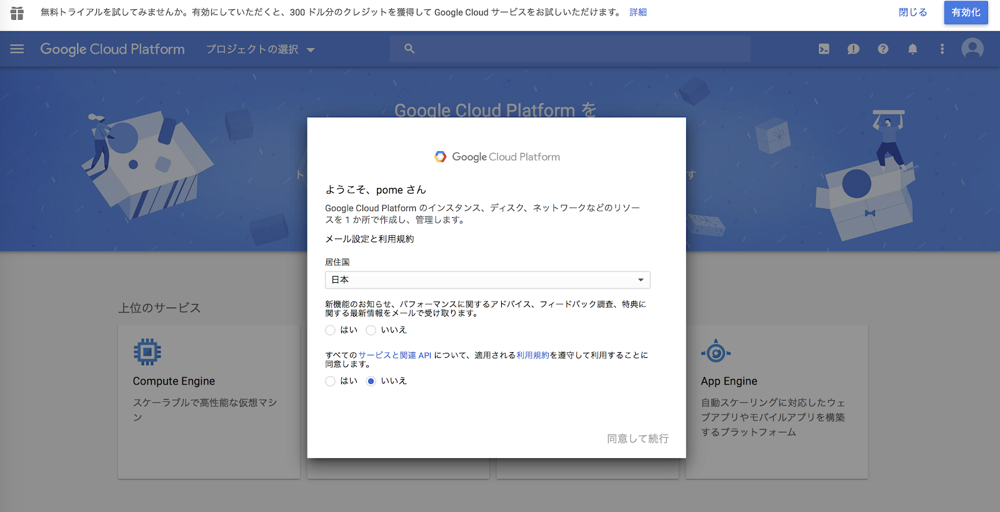
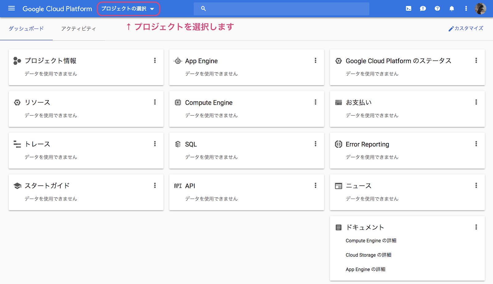
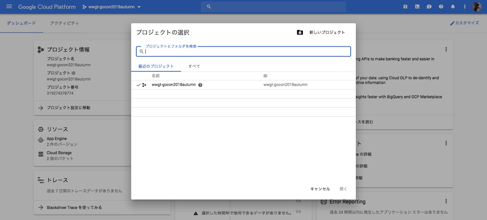
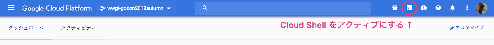
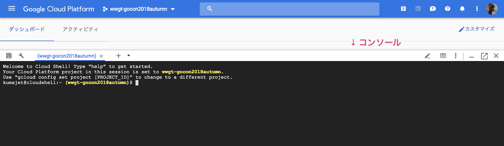
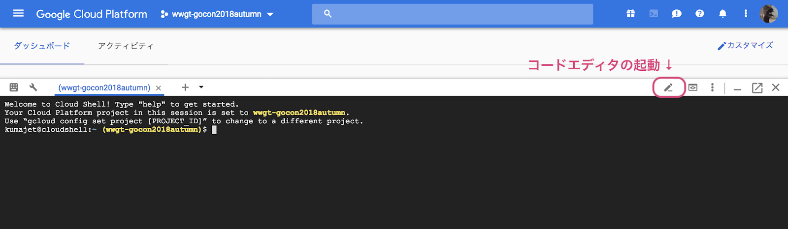
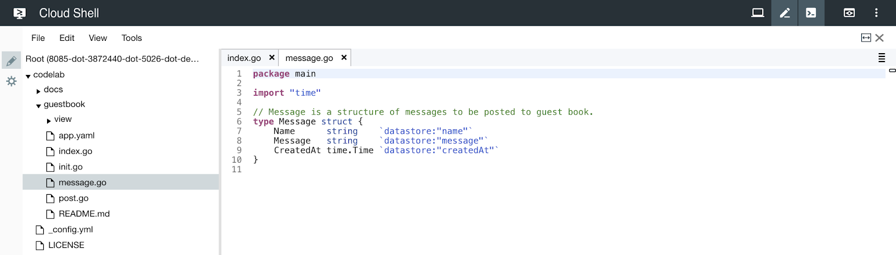

Google Cloud Shell はブラウザ上で動作して, Google Cloud Platform 上のサービスにアクセス, 操作することができるシェルです。
また, あらかじめ Go の環境が設定されているため, すぐに Go を書くことができます。
最初に下記のURLにアクセスします。
https://console.cloud.google.com/?hl=ja
Google Cloud Console を利用したことがない方は, 以下の規約同意画面が表示されます。
選択肢を "はい" に選択し, "同意して続行" をクリックしてください。

"プロジェクトの選択" をクリックします。

プロジェクトを選択する画面が表示されます。
利用するプロジェクトを選択して, "開く" をクリックしましょう。

"Cloud Shell をアクティブにする" ボタンを押下します。

コンソールが立ち上がります。

コンソールで, Go のプログラムを取得するコマンドを入力します。
$ git clone https://github.com/WomenWhoGoTokyo/codelab.git"Cloud Shell をアクティブにする" ボタンを押下します。
コンソールが立ち上がります。
コンソールで, Go のプログラムを公開するコマンドを入力します。
$ goapp deploy --application {アプリケーションID} --version {バージョン} ."コードエディタの起動" ボタンを押下します。

エディタが起動します。

左側がファイルの一覧, 右側がエディタです。
それでは, はじめましょう！